This the multi-page printable view of this section. Click here to print.
Basics
- 1: Authorization
- 2: Creating an annotation task
- 3: Tasks page
- 4: Task details
- 5: Interface of the annotation tool
- 6: 3D task workspace
- 7: Types of shapes
- 8: Basic navigation
- 9: Shape mode (basics)
- 10: Track mode (basics)
- 11: Attribute annotation mode (basics)
- 12: Standard 3D mode (basics)
- 13: 3D Object annotation (basics)
- 14: Settings
- 15: Vocabulary
- 16: Top Panel
- 17: Workspace
- 18: Controls sidebar
- 19: Objects sidebar
1 - Authorization
-
First of all, you have to log in to CVAT tool.
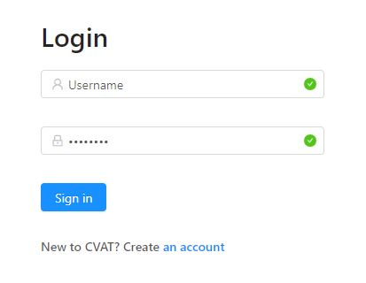
-
For register a new user press “Create an account”
-
You can register a user but by default it will not have rights even to view list of tasks. Thus you should create a superuser. The superuser can use Django administration panel to assign correct groups to the user. Please use the command below to create an admin account:
docker exec -it cvat bash -ic 'python3 ~/manage.py createsuperuser' -
If you want to create a non-admin account, you can do that using the link below on the login page. Don’t forget to modify permissions for the new user in the administration panel. There are several groups (aka roles): admin, user, annotator, observer.
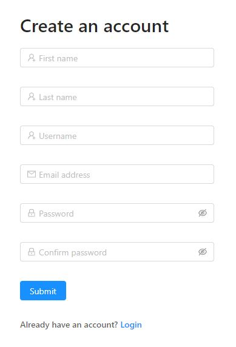
Administration panel
Go to the Django administration panel. There you can:
-
Create / edit / delete users
-
Control permissions of users and access to the tool.
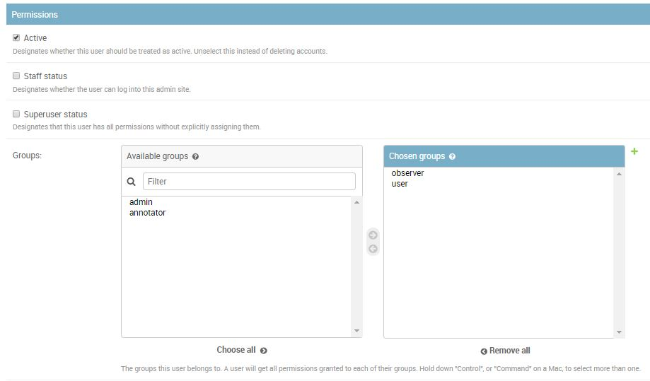
2 - Creating an annotation task
Create an annotation task pressing Create new task button on the tasks page or on the project page.

Specify parameters of the task:
Basic configuration
Name
The name of the task to be created.

Projects
The project that this task will be related with.

Labels
There are two ways of working with labels (available only if the task is not related to the project):
-
The
Constructoris a simple way to add and adjust labels. To add a new label click theAdd labelbutton.
You can set a name of the label in the
Label namefield and choose a color for each label.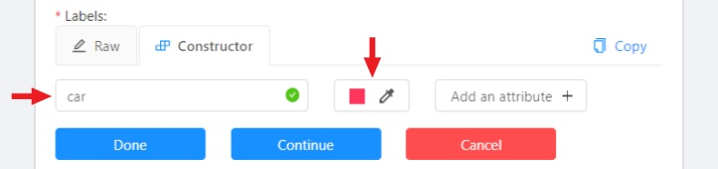
If necessary you can add an attribute and set its properties by clicking
Add an attribute: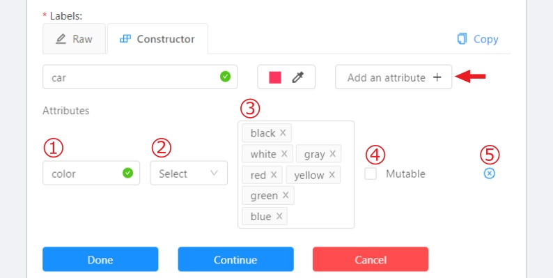
The following actions are available here:
- Set the attribute’s name.
- Choose the way to display the attribute:
- Select — drop down list of value
- Radio — is used when it is necessary to choose just one option out of few suggested.
- Checkbox — is used when it is necessary to choose any number of options out of suggested.
- Text — is used when an attribute is entered as a text.
- Number — is used when an attribute is entered as a number.
- Set values for the attribute. The values could be separated by pressing
Enter. The entered value is displayed as a separate element which could be deleted by pressingBackspaceor clicking the close button (x). If the specified way of displaying the attribute is Text or Number, the entered value will be displayed as text by default (e.g. you can specify the text format). - Checkbox
Mutabledetermines if an attribute would be changed frame to frame. - You can delete the attribute by clicking the close button (x).
Click the
Continuebutton to add more labels. If you need to cancel adding a label - press theCancelbutton. After all the necessary labels are added click theDonebutton. After clickingDonethe added labels would be displayed as separate elements of different colour. You can edit or delete labels by clickingUpdate attributesorDelete label. -
The
Rawis a way of working with labels for an advanced user. Raw presents label data in json format with an option of editing and copying labels as a text. TheDonebutton applies the changes and theResetbutton cancels the changes.
In Raw and Constructor mode, you can press the Copy button to copy the list of labels.
Select files
Press tab My computer to choose some files for annotation from your PC.
If you select tab Connected file share you can choose files for annotation from your network.
If you select Remote source , you’ll see a field where you can enter a list of URLs (one URL per line).
If you upload a video or dataset with images and select Use cache option, you can attach a manifest.jsonl file.
You can find how to prepare it here.
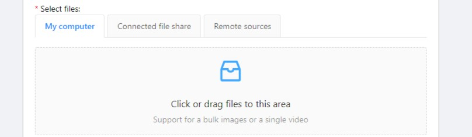
Data formats for a 3D task
To create a 3D task, you need to use the following directory structures:
VELODYNE FORMAT
Structure:
velodyne_points/
data/
image_01.bin
IMAGE_00 # unknown dirname, Generally image_01.png can be under IMAGE_00, IMAGE_01, IMAGE_02, IMAGE_03, etc
data/
image_01.png
3D POINTCLOUD DATA FORMAT
Structure:
pointcloud/
00001.pcd
related_images/
00001_pcd/
image_01.png # or any other image
3D, DEFAULT DATAFORMAT Option 1
Structure:
data/
image.pcd
image.png
3D, DEFAULT DATAFORMAT Option 2
Structure:
data/
image_1/
image_1.pcd
context_1.png # or any other name
context_2.jpg
Advanced configuration
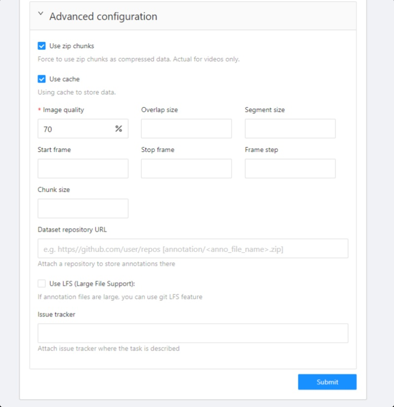
Use zip chunks
Force to use zip chunks as compressed data. Actual for videos only.
Use cache
Defines how to work with data. Select the checkbox to switch to the “on-the-fly data processing”, which will reduce the task creation time (by preparing chunks when requests are received) and store data in a cache of limited size with a policy of evicting less popular items. See more here.
Image Quality
Use this option to specify quality of uploaded images.
The option helps to load high resolution datasets faster.
Use the value from 5 (almost completely compressed images) to 100 (not compressed images).
Overlap Size
Use this option to make overlapped segments. The option makes tracks continuous from one segment into another. Use it for interpolation mode. There are several options for using the parameter:
- For an interpolation task (video sequence). If you annotate a bounding box on two adjacent segments they will be merged into one bounding box. If overlap equals to zero or annotation is poor on adjacent segments inside a dumped annotation file, you will have several tracks, one for each segment, which corresponds to the object.
- For an annotation task (independent images). If an object exists on overlapped segments, the overlap is greater than zero and the annotation is good enough on adjacent segments, it will be automatically merged into one object. If overlap equals to zero or annotation is poor on adjacent segments inside a dumped annotation file, you will have several bounding boxes for the same object. Thus, you annotate an object on the first segment. You annotate the same object on second segment, and if you do it right, you will have one track inside the annotations. If annotations on different segments (on overlapped frames) are very different, you will have two shapes for the same object. This functionality works only for bounding boxes. Polygons, polylines, points don’t support automatic merge on overlapped segments even the overlap parameter isn’t zero and match between corresponding shapes on adjacent segments is perfect.
Segment size
Use this option to divide a huge dataset into a few smaller segments. For example, one job cannot be annotated by several labelers (it isn’t supported). Thus using “segment size” you can create several jobs for the same annotation task. It will help you to parallel data annotation process.
Start frame
Frame from which video in task begins.
Stop frame
Frame on which video in task ends.
Frame Step
Use this option to filter video frames.
For example, enter 25 to leave every twenty fifth frame in the video or every twenty fifth image.
Chunk size
Defines a number of frames to be packed in a chunk when send from client to server. Server defines automatically if empty.
Recommended values:
- 1080p or less: 36
- 2k or less: 8 - 16
- 4k or less: 4 - 8
- More: 1 - 4
Dataset Repository
URL link of the repository optionally specifies the path to the repository for storage
(default: annotation / <dump_file_name> .zip).
The .zip and .xml file extension of annotation are supported.
Field format: URL [PATH] example: https://github.com/project/repos.git [1/2/3/4/annotation.xml]
Supported URL formats :
https://github.com/project/repos[.git]github.com/project/repos[.git]git@github.com:project/repos[.git]
After the task is created, the synchronization status is displayed on the task page.
Use LFS
If the annotation file is large, you can create a repository with LFS support.
Issue tracker
Specify full issue tracker’s URL if it’s necessary.
Push Submit button and it will be added into the list of annotation tasks.
Then, the created task will be displayed on a tasks page.
3 - Tasks page
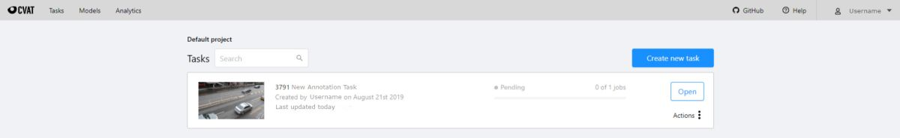
The tasks page contains elements and each of them relates to a separate task. They are sorted in creation order.
Each element contains: task name, preview, progress bar, button Open, and menu Actions.
Each button is responsible for a in menu Actions specific function:
Export task dataset— download annotations or annotations and images in a specific format. More information is available in the Downloading annotations section.Upload annotationis available in the same formats as inExport task dataset. The CVAT format accepts both video and image sub-formats.Automatic Annotation— automatic annotation with OpenVINO toolkit. Presence depends on how you build CVAT instance.Export task— Export a task into a zip archive. Read more in the export/import a task section.Move to project— Moving the task to the project (can be used to move a task from one project to another). Note that attributes reset during the moving process. In case of label mismatch, you can create or delete necessary labels in the project/task. Some task labels can be matched with the target project labels.Delete— delete task.
Push Open button to go to task details.
4 - Task details
Task details is a task page which contains a preview, a progress bar and the details of the task (specified when the task was created) and the jobs section.
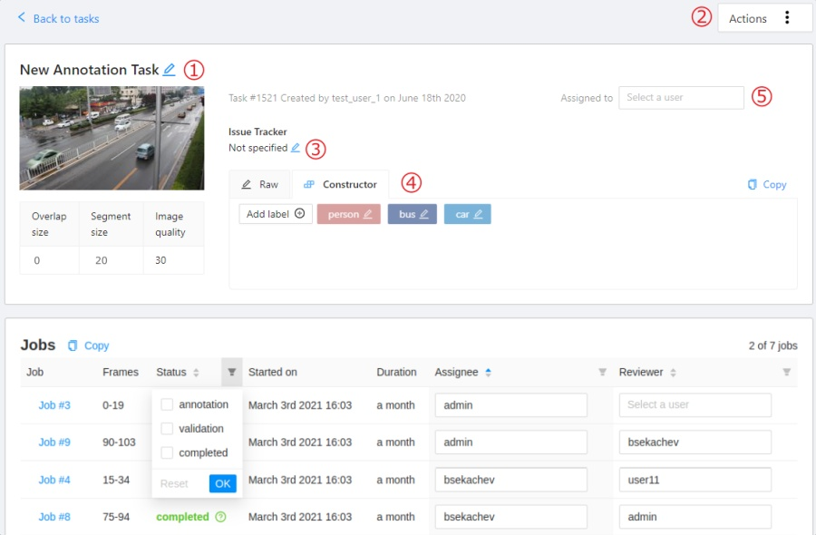
-
The next actions are available on this page:
- Change the task’s title.
- Open
Actionsmenu. - Change issue tracker or open issue tracker if it is specified.
- Change labels (available only if the task is not related to the project).
You can add new labels or add attributes for the existing labels in the Raw mode or the Constructor mode.
By clicking
Copyyou will copy the labels to the clipboard. - Assigned to — is used to assign a task to a person. Start typing an assignee’s name and/or choose the right person out of the dropdown list.
-
Jobs— is a list of all jobs for a particular task. Here you can find the next data:- Jobs name with a hyperlink to it.
- Frames — the frame interval.
- A status of the job. The status is specified by the user in the menu inside the job. There are three types of status: annotation, validation or completed. The status of the job is changes the progress bar of the task.
- Started on — start date of this job.
- Duration — is the amount of time the job is being worked.
- Assignee is the user who is working on the job. You can start typing an assignee’s name and/or choose the right person out of the dropdown list.
- Reviewer – a user assigned to carry out the review, read more in the review section.
Copy. By clickingCopyyou will copy the job list to the clipboard. The job list contains direct links to jobs.
You can filter or sort jobs by status, as well as by assigner or reviewer.
Follow a link inside Jobs section to start annotation process.
In some cases, you can have several links. It depends on size of your
task and Overlap Size and Segment Size parameters. To improve
UX, only the first chunk of several frames will be loaded and you will be able
to annotate first images. Other frames will be loaded in background.
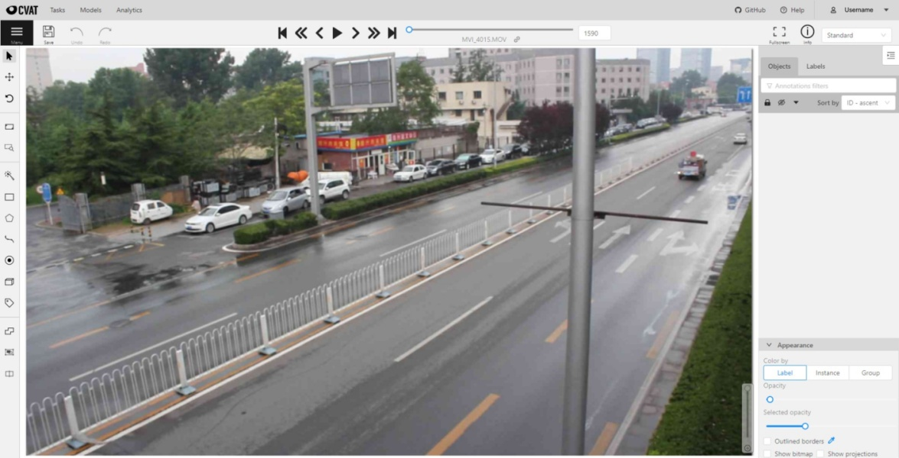
5 - Interface of the annotation tool
The tool consists of:
Header- pinned header used to navigate CVAT sections and account settings;Top panel— contains navigation buttons, main functions and menu access;Workspace— space where images are shown;Controls sidebar— contains tools for navigating the image, zoom, creating shapes and editing tracks (merge, split, group)Objects sidebar— contains label filter, two lists: objects (on the frame) and labels (of objects on the frame) and appearance settings.

6 - 3D task workspace
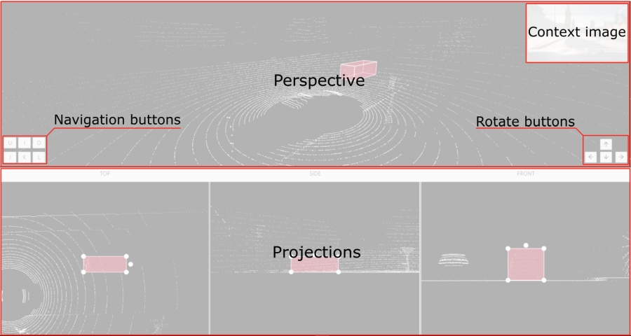
If the related_images folder contains any images, a context image will be available in the perspective window.
The contextual image could be compared to 3D data and would help to identify the labels of marked objects.
Perspective – a main window for work with objects in a 3D task.
Projections - projections are tied to an object so that a cuboid is in the center and looks like a rectangle. Projections show only the selected object.
Top– a projection of the view from above.Side– a projection of the left side of the object.Front- a frontal projection of the object.
7 - Types of shapes
There are five shapes which you can annotate your images with:
RectangleorBounding boxPolygonPolylinePointsCuboidCuboid in 3d taskTag
And there is how they all look like:
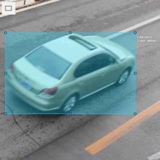 
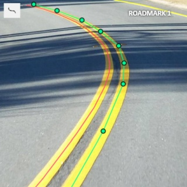 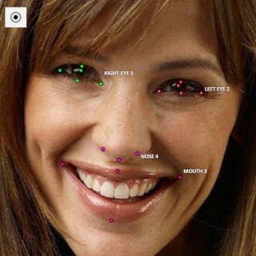


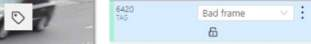
Tag - has no shape in the workspace, but is displayed in objects sidebar.
8 - Basic navigation
-
Use arrows below to move to the next/previous frame. Use the scroll bar slider to scroll through frames. Almost every button has a shortcut. To get a hint about a shortcut, just move your mouse pointer over an UI element.

-
To navigate the image, use the button on the controls sidebar. Another way an image can be moved/shifted is by holding the left mouse button inside an area without annotated objects. If the
Mouse Wheelis pressed, then all annotated objects are ignored. Otherwise the a highlighted bounding box will be moved instead of the image itself.
-
You can use the button on the sidebar controls to zoom on a region of interest. Use the button
Fit the imageto fit the image in the workspace. You can also use the mouse wheel to scale the image (the image will be zoomed relatively to your current cursor position).
9 - Shape mode (basics)
Usage examples:
- Create new annotations for a set of images.
- Add/modify/delete objects for existing annotations.
-
You need to select
Rectangleon the controls sidebar: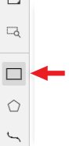
Before you start, select the correct
Label(should be specified by you when creating the task) andDrawing Method(by 2 points or by 4 points):
-
Creating a new annotation in
Shape mode:-
Create a separate
Rectangleby clicking onShape.
-
Choose the opposite points. Your first rectangle is ready!
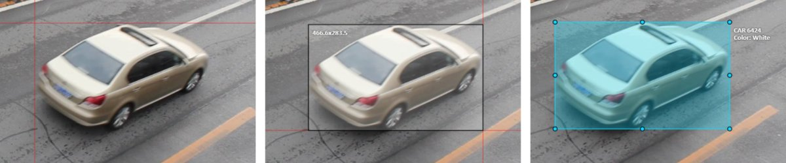
-
To learn about creating a rectangle using the by 4 point drawing method, (read here).
-
It is possible to adjust boundaries and location of the rectangle using a mouse. Rectangle’s size is shown in the top right corner , you can check it by clicking on any point of the shape. You can also undo your actions using
Ctrl+Zand redo them withShift+Ctrl+ZorCtrl+Y.
-
-
You can see the
Object cardin the objects sidebar or open it by right-clicking on the object. You can change the attributes in the details section. You can perform basic operations or delete an object by clicking on the action menu button.
-
The following figure is an example of a fully annotated frame with separate shapes.
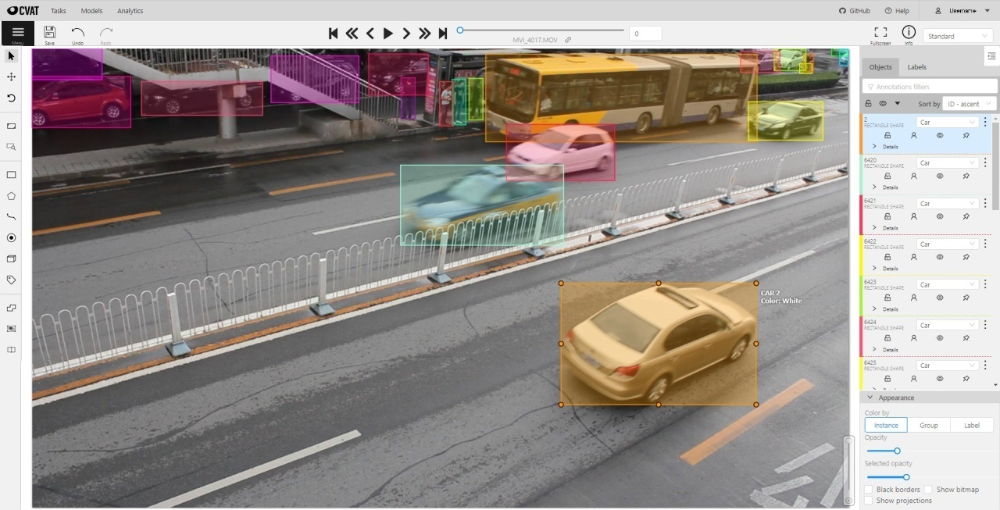
Read more in the section shape mode (advanced).
10 - Track mode (basics)
Usage examples:
- Create new annotations for a sequence of frames.
- Add/modify/delete objects for existing annotations.
- Edit tracks, merge several rectangles into one track.
-
Like in the
Shape mode, you need to select aRectangleon the sidebar, in the appearing form, select the desiredLabeland theDrawing method.
-
Creating a track for an object (look at the selected car as an example):
-
Create a
RectangleinTrack modeby clicking onTrack.
-
In
Track modethe rectangle will be automatically interpolated on the next frames. -
The cyclist starts moving on frame #2270. Let’s mark the frame as a key frame. You can press
Kfor that or click thestarbutton (see the screenshot below).
-
If the object starts to change its position, you need to modify the rectangle where it happens. It isn’t necessary to change the rectangle on each frame, simply update several keyframes and the frames between them will be interpolated automatically.
-
Let’s jump 30 frames forward and adjust the boundaries of the object. See an example below:
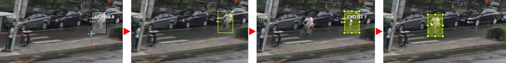
-
After that the rectangle of the object will be changed automatically on frames 2270 to 2300:

-
-
When the annotated object disappears or becomes too small, you need to finish the track. You have to choose
Outside Property, shortcutO.
-
If the object isn’t visible on a couple of frames and then appears again, you can use the
Mergefeature to merge several individual tracks into one.
-
Create tracks for moments when the cyclist is visible:
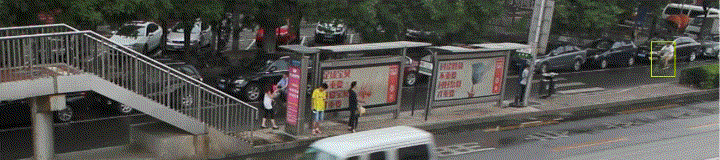
-
Click
Mergebutton or press keyMand click on any rectangle of the first track and on any rectangle of the second track and so on:
-
Click
Mergebutton or pressMto apply changes. -
The final annotated sequence of frames in
Interpolationmode can look like the clip below: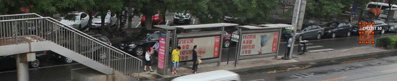
Read more in the section track mode (advanced).
-
11 - Attribute annotation mode (basics)
-
In this mode you can edit attributes with fast navigation between objects and frames using a keyboard. Open the drop-down list in the top panel and select Attribute annotation Mode.
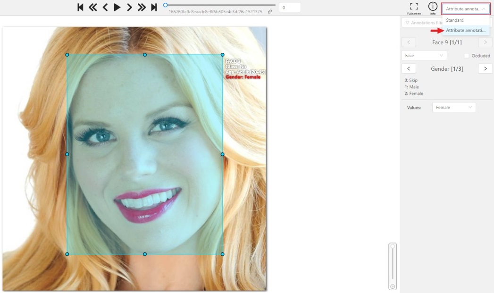
-
In this mode objects panel change to a special panel :

-
The active attribute will be red. In this case it is
gender. Look at the bottom side panel to see all possible shortcuts for changing the attribute. Press key2on your keyboard to assign a value (female) for the attribute or select from the drop-down list.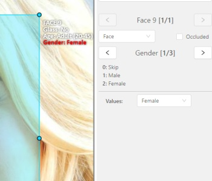
-
Press
Up Arrow/Down Arrowon your keyboard or click the buttons in the UI to go to the next/previous attribute. In this case, after pressingDown Arrowyou will be able to edit theAgeattribute.
-
Use
Right Arrow/Left Arrowkeys to move to the previous/next image with annotation.
To see all the hot keys available in the attribute annotation mode, press F2.
Read more in the section attribute annotation mode (advanced).
12 - Standard 3D mode (basics)
Standard 3d mode - Designed to work with 3D data.
The mode is automatically available if you add PCD or Kitty BIN format data when you create a task.
read more
You can adjust the size of the projections, to do so, simply drag the boundary between the projections.

13 - 3D Object annotation (basics)
Navigation
To move in 3D space you can use several methods:
-
Select the
move the imagetool so you can move the camera using the mouse: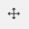
- Hold down the left mouse button in the perspective window to turn the camera around the conditional point.
- Hold down the right mouse button in the perspective window to move the camera inside the 3D space.
- Move the mouse while holding down the wheel to zoom in/out in the perspective window.
- Scroll the wheel to zoom in/out (works both in perspective and in projections).
-
Move using the keys in the perspective window

You can move around by pressing the corresponding buttons:
- To rotate the camera use:
Shift+arrrowup/Shift+arrrowdown/Shift+arrrowleft/Shift+arrrowright. - To move left/right use:
Allt+J/Alt+L. - To move up/down use:
Alt-U/Alt+O. - To zoom in/out use:
Alt+K/Alt+I.
Creating a cuboid
To create a cube in a 3D task you need to click the appropriate icon on the control sidebar,
select the label of the future object and click shape.
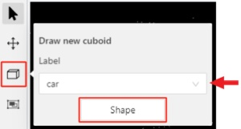
After that the cursor will be followed by a cube. In the creation process you can rotate and move the camera only using the keys. Left double-click will create an object. You can place an object only near the dots of the point cloud.
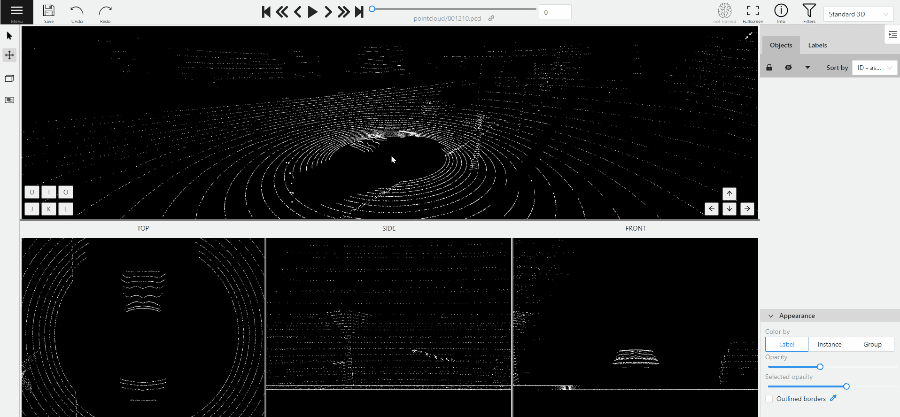
To adjust the size precisely, you need to edit the cuboid on the projections, for this change Сursor on control
sidebar or press Esc. In each projection you can:
Move the object in the projection plane - to do this, hover over the object, press the left mouse button and move the object.
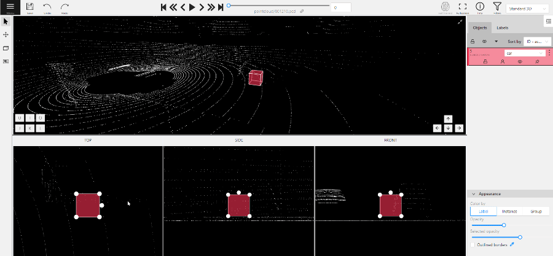
Move one of the four points - you can change the size of the cuboid by dragging the points in the projection.
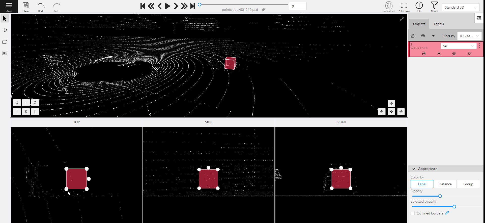
Rotate the cuboid in the projection plane – to rotate the cuboid you should click on the appropriate point and then drag it up/down or to the left/right.
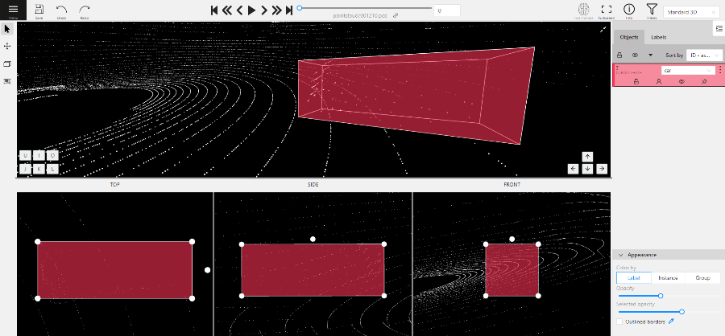
14 - Settings
To open the settings open the user menu in the header and select the settings item or press F2.
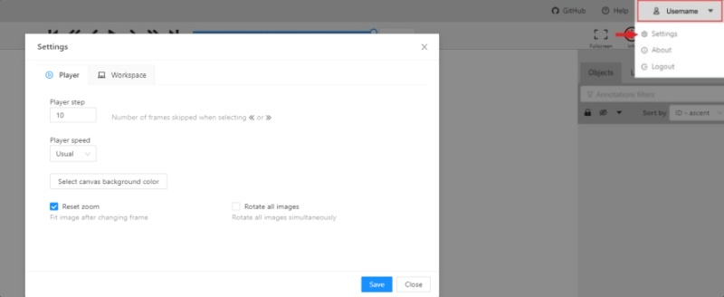
Settings have two tabs:
In tab Player you can:
- Control step of
CandVshortcuts. - Control speed of
Space/Playbutton. - Select canvas background color. You can choose a background color or enter manually (in RGB or HEX format).
Reset zoomShow every image in full size or zoomed out like previous (it is enabled by default for interpolation mode and disabled for annotation mode).Rotate all imagescheckbox — switch the rotation of all frames or an individual frame.
In tab Workspace you can:
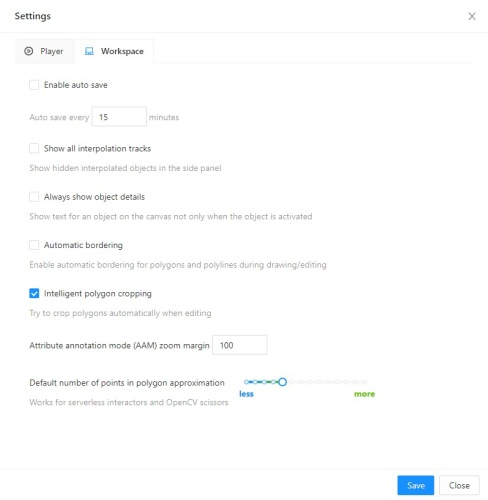
-
Enable auto savecheckbox — turned off by default. -
Auto save interval (min)input box — 15 minutes by default. -
Show all interpolation trackscheckbox — shows hidden objects on the side panel for every interpolated object (turned off by default). -
Always show object details- show text for an object on the canvas not only when the object is activated: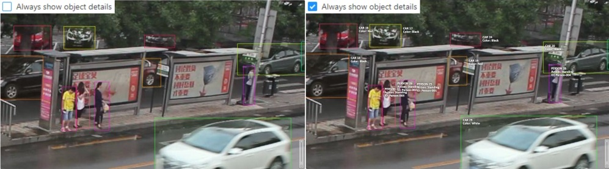
-
Automatic bordering- enable automatic bordering for polygons and polylines during drawing/editing. For more information To find out more, go to the section annotation with polygons. -
Intelligent polygon cropping- activates intelligent cropping when editing the polygon (read more in the section edit polygon -
Attribute annotation mode (AAM) zoom margininput box — defines margins (in px) for shape in the attribute annotation mode. -
Click
Saveto save settings (settings will be saved on the server and will not change after the page is refreshed). ClickCancelor pressF2to return to the annotation. -
Default number of points in polygon approximationWith this setting, you can choose the default number of points in polygon. Works for serverless interactors and OpenCV scissors.
15 - Vocabulary
Label is a type of an annotated object (e.g. person, car, vehicle, etc.)
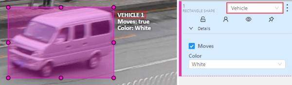
Attribute is a property of an annotated object (e.g. color, model, quality, etc.). There are two types of attributes:
-
Unique: immutable and can’t be changed from frame to frame (e.g. age, gender, color, etc.)

-
Temporary: mutable and can be changed on any frame (e.g. quality, pose, truncated, etc.)
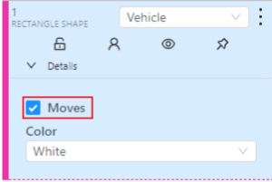
Track is a set of shapes on different frames which corresponds to one object.
Tracks are created in Track mode
Annotation is a set of shapes and tracks. There are several types of annotations:
- Manual which is created by a person
- Semi-automatic which is created mainly automatically, but the user provides some data (e.g. interpolation)
- Automatic which is created automatically without a person in the loop
Approximation allows you to reduce the number of points in the polygon. Can be used to reduce the annotation file and to facilitate editing polygons.

16 - Top Panel
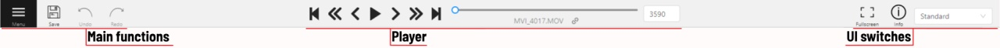
Menu button
It is the main menu of the annotation tool. It can be used to download, upload and remove annotations.
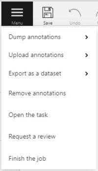
Button assignment:
Dump Annotations— downloads annotations from a task.Upload Annotations— uploads annotations into a task.Remove Annotations— removes annotations from the current job.Export as a dataset— download a data set from a task. Several formats are available:Open the task— opens a page with details about the task.Request a review- calls up the form to submit the job for a review, read more in the review section.Finish the job- changes the status of the job tocompletedand returns to the task page without review.Submit the review- (available during the review) calls up the form to submit a review, read more in the review section.
Save Work
Saves annotations for the current job. The button has an indication of the saving process.

Undo-redo buttons
Use buttons to undo actions or redo them.

Done

Used to complete the creation of the object. This button appears only when the object is being created.
Block

Used to pause automatic line creation when drawing a polygon with OpenCV Intelligent scissors. Also used to postpone server requests when creating an object using AI Tools. When blocking is activated, the button turns blue.
Player
Go to the first /the latest frames.

Go to the next/previous frame with a predefined step. Shortcuts:
V — step backward, C — step forward. By default the step is 10 frames
(change at Account Menu —> Settings —> Player Step).
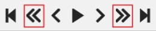
The button to go to the next / previous frame has the customization possibility. To customize, right-click on the button and select one of three options:
- The default option - go to the next / previous frame (the step is 1 frame).
- Go to the next / previous frame that has any objects (in particular filtered). Read the filter section to know the details how to use it.
- Go to the next / previous frame without annotation at all. Use this option in cases when you need to find missed frames quickly.
Shortcuts: D - previous, F - next.

Play the sequence of frames or the set of images.
Shortcut: Space (change at Account Menu —> Settings —> Player Speed).

Go to a specific frame. Press ~ to focus on the element.
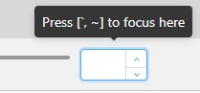
Fullscreen Player
The fullscreen player mode. The keyboard shortcut is F11.
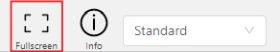
Info
Open the job info.

Overview:
Assignee- the one to whom the job is assigned.Reviewer– a user assigned to carry out the review, read more in the review section.Start Frame- the number of the first frame in this job.End Frame- the number of the last frame in this job.Frames- the total number of all frames in the job.
Annotations statistics:
This is a table number of created shapes, sorted by labels (e.g. vehicle, person) and type of annotation (shape, track). As well as the number of manual and interpolated frames.
UI switcher
Switching between user interface modes.

17 - Workspace
This is the main field in which drawing and editing objects takes place. In addition the workspace also has the following functions:
-
Right-clicking on an object calls up the
Object card- this is an element containing the necessary controls for changing the label and attributes of the object, as well as the action menu.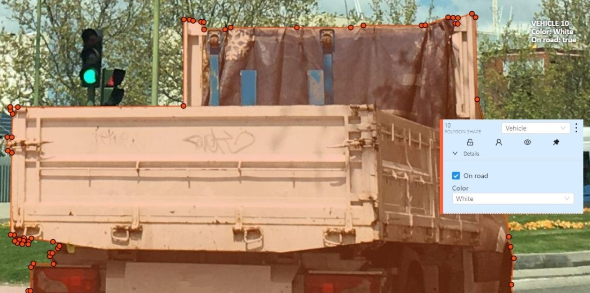
-
Right-clicking a point deletes it.
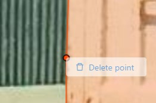
-
Z-axis slider- Allows you to switch annotation layers hiding the upper layers (slider is enabled if several z layers are on a frame). This element has a button for adding a new layer. When pressed, a new layer is added and switched to it. You can move objects in layers using the+and-keys.
-
Image settings panel- used to set up the grid and set up image brightness contrast saturation.-
Show
Grid, change grid size, choose color and transparency: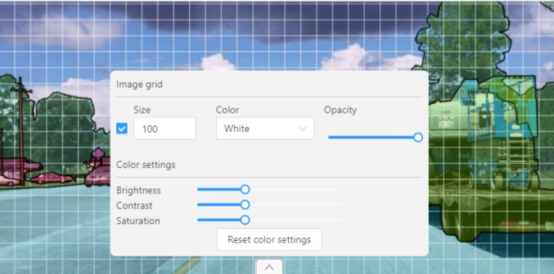
-
Adjust
Brightness/Contrast/Saturationof too exposed or too dark images usingF3— color settings (changes displaying settings and not the image itself).
Shortcuts:
-
Shift+B+=/Shift+B+-for brightness. -
Shift+C+=/Shift+C+-for contrast. -
Shift+S+=/Shift+S+-for saturation.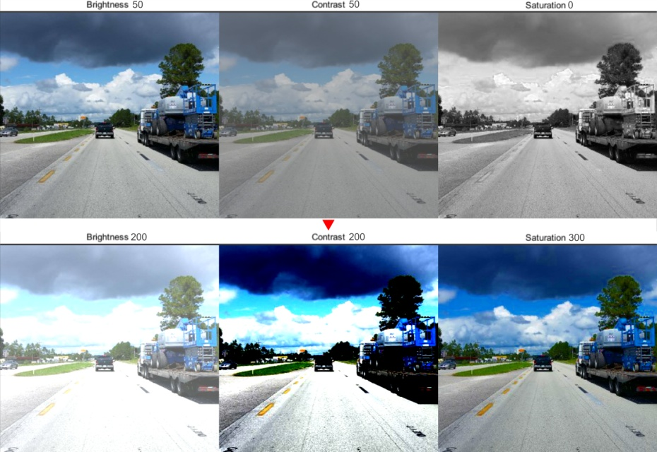
-
Reset color settingsto default values.
-
18 - Controls sidebar
Navigation
Navigation block - contains tools for moving and rotating images.
| Icon | Description |
|---|---|
 |
Cursor (Esc)- a basic annotation pedacting tool. |
Move the image- a tool for moving around the image withoutthe possibility of editing. |
|
| 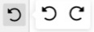 | Rotate- two buttons to rotate the current framea clockwise ( Ctrl+R) and anticlockwise (Ctrl+Shift+R).You can enable Rotate all images in the settings to rotate all the images in the job |
Zoom
Zoom block - contains tools for image zoom.
| Icon | Description |
|---|---|
 |
Fit image- fits image into the workspace size.Shortcut - double click on an image |
Select a region of interest- zooms in on a selected region.You can use this tool to quickly zoom in on a specific part of the frame. |
Shapes
Shapes block - contains all the tools for creating shapes.
| Icon | Description | Links to section |
|---|---|---|
 |
AI Tools |
AI Tools |
 |
OpenCV |
OpenCV |
| 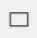 | Rectangle |
Shape mode; Track mode; Drawing by 4 points |
Polygon |
Annotation with polygons; Track mode with polygons | |
| 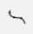 | Polyline |
Annotation with polylines |
Points |
Annotation with points | |
 |
Cuboid |
Annotation with cuboids |
 |
Tag |
Annotation with tags |
 |
Open an issue |
Review (available only in review mode) |
Edit
Edit block - contains tools for editing tracks and shapes.
| Icon | Description | Links to section |
|---|---|---|
 |
Merge Shapes(M) — starts/stops the merging shapes mode. |
Track mode (basics) |
 |
Group Shapes (G) — starts/stops the grouping shapes mode. |
Shape grouping |
 |
Split — splits a track. |
Track mode (advanced) |
19 - Objects sidebar
Hide objects sidebar
Hide - the button hides the object’s sidebar.

Objects
Filter input box

The way how to use filters is described in the advanced guide here.
List of objects

- Switch lock property for all - switches lock property of all objects in the frame.
- Switch hidden property for all - switches hide property of all objects in the frame.
- Expand/collapse all - collapses/expands the details field of all objects in the frame.
- Sorting - sort the list of objects: updated time, ID - accent, ID - descent
In the objects sidebar you can see the list of available objects on the current frame. The following figure is an example of how the list might look like:
| Shape mode | Track mode |
|---|---|
| 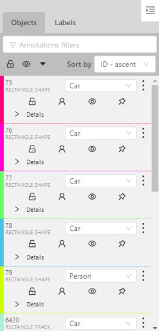 |  |
Objects on the side bar
The type of a shape can be changed by selecting Label property. For instance, it can look like shown on the figure below:

Object action menu
The action menu calls up the button:

The action menu contains:
-
Create object URL- puts a link to an object on the clipboard. After you open the link, this object will be filtered. -
Make a copy- copies an object. The keyboard shortcut isCtrl + CCtrl + V. -
Propagate- Сopies the form to several frames, invokes a dialog box in which you can specify the number of copies or the frame onto which you want to copy the object. The keyboard shortcutCtrl + B.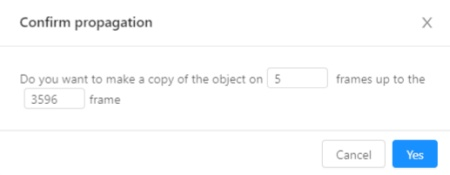
-
To background- moves the object to the background. The keyboard shortcut-,_. -
To foreground- moves the object to the foreground. The keyboard shortcut+,=. -
Change instance color- choosing a color using the color picker (available only in instance mode).
-
Remove- removes the object. The keyboard shortcutDel,Shift+Del.
A shape can be locked to prevent its modification or moving by an accident. Shortcut to lock an object: L.
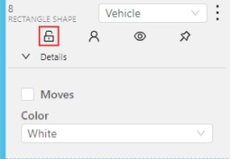
A shape can be Occluded. Shortcut: Q. Such shapes have dashed boundaries.
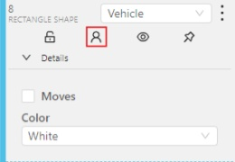
You can change the way an object is displayed on a frame (show or hide).
Switch pinned property - when enabled, a shape cannot be moved by dragging or dropping.

By clicking on the Details button you can collapse or expand the field with all the attributes of the object.
Labels
In this tab you can lock or hide objects of a certain label. To change the color for a specific label, you need to go to the task page and select the color by clicking the edit button, this way you will change the label color for all jobs in the task.

Fast label change
You can change the label of an object using hot keys. In order to do it, you need to assign a number (from 0 to 9) to labels. By default numbers 1,2…0 are assigned to the first ten labels. To assign a number, click on the button placed at the right of a label name on the sidebar.

After that you will be able to assign a corresponding label to an object
by hovering your mouse cursor over it and pressing Ctrl + Num(0..9).
In case you do not point the cursor to the object, pressing Ctrl + Num(0..9) will set a chosen label as default,
so that the next object you create (use N key) will automatically have this label assigned.

Appearance
Color By options
Change the color scheme of annotation:
-
Instance— every shape has random color
-
Group— every group of shape has its own random color, ungrouped shapes are white -
Label— every label (e.g. car, person) has its own random color
You can change any random color pointing to a needed box on a frame or on an object sidebar.
Fill Opacity slider
Change the opacity of every shape in the annotation.

Selected Fill Opacity slider
Change the opacity of the selected object’s fill. It is possible to change opacity while drawing an object in the case of rectangles, polygons and cuboids.
Outlines borders checkbox
You can change a special shape border color by clicking on the Eyedropper icon.

Show bitmap checkbox
If enabled all shapes are displayed in white and the background is black.
Show projections checkbox
Enables / disables the display of auxiliary perspective lines. Only relevant for cuboids